Hi, I am Nick van Leijden. I'm a second years Communication and Multimedia HvA student. Thinking and creating new concepts for the web is one of my biggest passions. I love setting up wireframes and designing prototypes in particular.
Before starting my adventure at my current study I studied Computer Science at Inholland Haarlem, this has made sure I have the ability to understand coding fundamentals. My hobby's include gaming, video editing and swimming. I would really love to combine my passion for design, storytelling and gaming after I've completed my study.
my skills
HTML 5
Advanced knowledge of HTML 5 and its underlying features is in my featureset
CSS 3

I have worked with CSS 3 alot since starting my study and have developed the ability to create and manage CSS stylesheets effectively
Javascript
I am able to understand and and work with coding fundamentals and work side to side with Front- and Back-End Developers
Adobe Editing Suite
I've worked with the Creative Cloud Suite for some time now and have advanced knowledge of Photoshop, Illustrator, Indesign and Experience Design
Video Editing
I love to create and edit videos. My preferred softwares are Premiere Pro and After Effects.
Creative and Logical thinking
Thanks to my programming background I have the ability to think structured and explain my produced work to front-end developers and other designers
my work
Search a book
nominated for a
CMD Golden Dot Award
type of work: Interface Design
I designed an interface for the Communication and Multimedia Design Visual Interface Design course. The concept was designed for the public library of Amsterdam and The concept focuses on progressive disclosure, visual guidance and different states.
Coffee Socket
Type of work: New Product development
A new concept for a smart coffee bar that keeps coffee warm until the customer can drop by and pick up their order. Customers could scan their recieved qrcode or login to the tablet via nfc and/or bluetooth and grab their order from the warming station.
K1logaming
Type of work: Youtube Intro
To familiarize myself with Adobe After Effects I decided to create my own project, namely: To start work on my own Youtube channel. This intro is one of many concept intros I created during the project.
Travelreads
Type of work: Website design & development
Travelreads is a concept website I designed and created using the Adobe Creative Suite, HTML, CSS and javascript. The finalized product is a HTLM concept website
Io
Type of work: Product Design
Io is a smart sleeping assistent that wakes the user with color and can be adjusted to the users needs thanks to the companion app on smartphone.
Down the rabbithole
Type of work: Information Architecture
The mission for the CMD course called: Information Architecture was to create a template for a festival application that could support a wide range of information types. The information should always be accessible and the users should always have the option to narrow down the information to their interests.
My Brand
Type of work: Branding
The mission for this short project was simple: "Design a brand around yourself". I decided to design a social media application around myself presented on the mockup above
K1logaming
Type of work: Youtube Intro
Another Youtube Intro that focuses on my brand style.